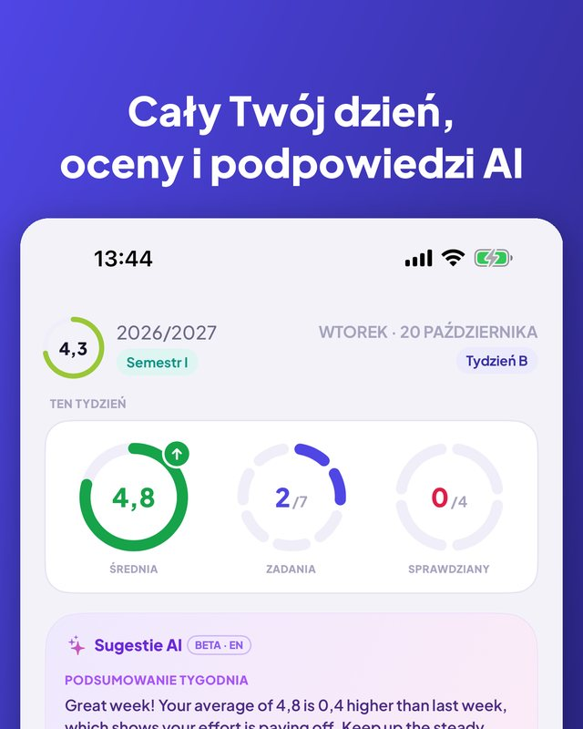
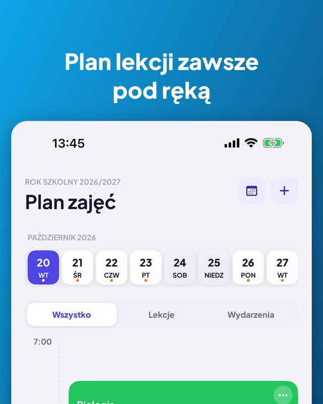
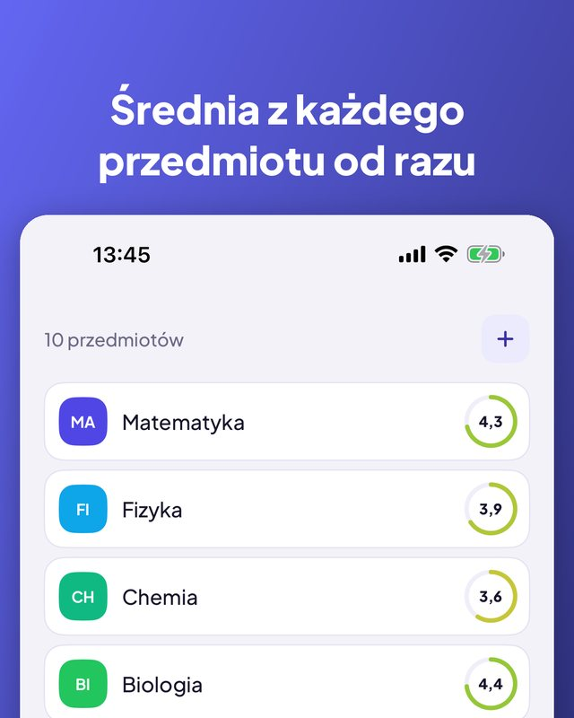
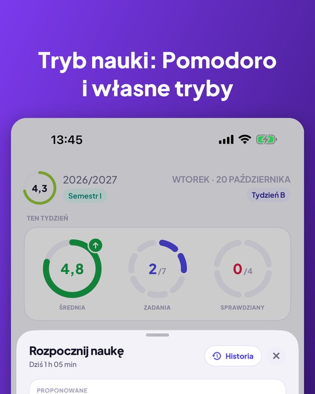
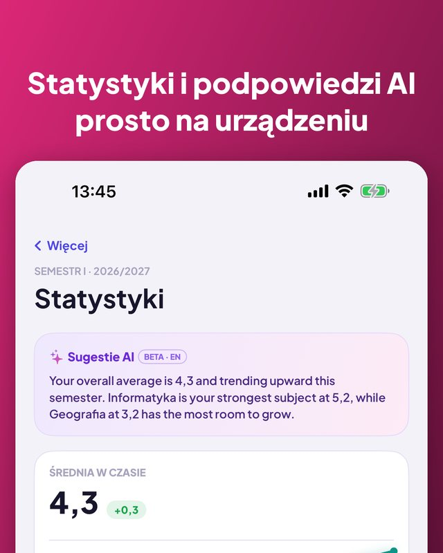

Kajet to planer ucznia i studenta. Cały dzień na jednym ekranie, oceny ze średnią, zadania i sprawdziany z przypomnieniami oraz timer nauki z Pomodoro. Bez konta, bez reklam.


Widok dnia i tygodnia, sale, godziny.
Odwołane, zastępstwa lub inna sala na jeden dzień.
Sport, muzyka, korepetycje, z przypomnieniem o wyjściu.
Najbliższa lekcja na ekranie głównym i blokady.
Własne kategorie, komentarze i poprawy.
Trend w czasie, najlepszy przedmiot, co ciągnie w dół.
Punkty, oceny końcowe, średnia ważona ECTS.
Ustaw próg i zobacz, jakich ocen jeszcze potrzebujesz.
Dziś, jutro, w tym tygodniu, później. Odhaczasz jednym dotknięciem.
Dzień lub trzy dni wcześniej, wieczorem albo o wybranej porze.
Odliczanie lub Pomodoro, powiązane ze sprawdzianem.
7 dni, miesiąc lub semestr, z podziałem na przedmioty.
Podsumowanie tygodnia i kiedy się uczyć. Tylko na Twoim iPhonie.
Zapytaj o następną lekcję albo dodaj ocenę głosem.
Nowy zaczniesz, kopiując poprzedni.
Używa języka Twojego iPhone'a.



Aplikacja, widżet, Siri i Skróty są dostępne w 13 językach. Kajet używa języka Twojego iPhone'a.
Bez konta, bez reklam, a dane zostają przy Tobie.
Stworzony z myślą o polskiej szkole i uczelni (oceny 1–6, skala 2,0–5,0, ECTS), ale przydatny wszędzie. Na iPhone'a z iOS 17 lub nowszym; podpowiedzi AI wymagają iOS 26 i Apple Intelligence.